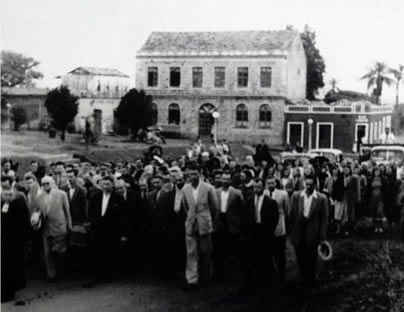

Conheça nossa história:
O Hotel Cordoni, junto com o Bar Cordoni, que funcionava na esquina bem em frente à praça Crescêncio Pereira, pelo lado oeste, é uma referência cultural para os são-pedrenses e agregados, símbolo de identidade da cidade, marco imponente em frente à praça e agora ao Largo Ivo Cordoni, homenagem póstuma ao fundador e administrador do Hotel. Seus proprietários Ivo e Iva, assim como trio Dica, Tilinha e Anita, que trabalhavam com eles e dedicaram uma vida ao Hotel, marcaram com alegria a vida de várias gerações de frequentadores do Hotel Cordoni.